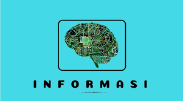
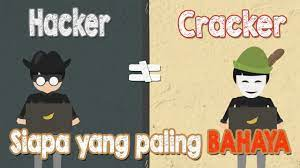
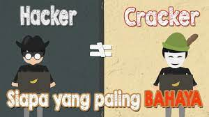
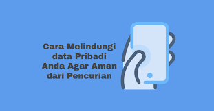
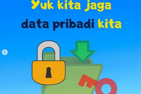
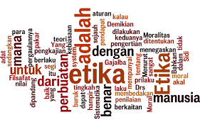

Informasi biasanya dibedakan dengan data. Data adalah fakta mentah yang belum memberikan pengetahuan. Dalam Webster New World Dictonary, data didefinisikan sebagai ‘things known or assumed’.

Informasi berasal dari bahasa Prancis kuno, yaitu informacion dan diambil dari bahasa Latin informationem yang artinya “konsep, ide, garis besar”. Informasi informare, artinya “pengetahuan yang dikomunikasikan”. Perilaku seseorang akan sesuai dengan pengetahuan yang dimilikinya. Pengetahuan yang dimiliki seseorang akan bergantung pada informasi yang diterimanya.
Dalam Kamus besar Bahasa Indonesia (KBBI), informasi adalah penerangan atau pemberitahuan; kabar atau berita tentang sesuatu. Jadi, ketika seseorang menyampaikan suatu berita tertentu kepada orang lain, artinya seseorang menyebarkan informasi, baik itu disampaikan kepada satu ornag ataupun banyak orang.
Suatu keputusan suatu penyelenggaraan urusan publik sering kali harus dilakukan dengan mengolah terlebih dahulu data dan informasi yang bersifat privat bertujuan untuk memenuhi kewajiban Negara dalam dua hal berikut:
1. Mencegah pengungkapan atau pemanfaatan data maupun informasi yang akan merugikan kepentingan pribadi atau menciderai hak-hak pribadi yang dilindungi oleh Undang-Undang.
2. Mencegah mengungkapkan atau pemanfaatan data maupun informasi yang akan merugikan kepentingan bersama atau menciderai hak-hak kolektif warga Negara yang dilindungi oleh Undang-Undang.
1. Benar atau salah.

Informasi ada yang benar dan ada yang salah, artinya ada yang sesuai kenyataan atau hasil rekayasa. Oleh karena itu selediki terlebih dahulu kebenarannya, jika meragukan jangan disebarkan.
2. Baru.

Informasi yang baru bagi si penerima akan mengandung rasa penasaran untuk mengetahui lebih lanjut seperti informasi yang bersifat trending topic atau viral yang membuat penerima informasi dengan senang waktu meluangkan waktunya untuk menyimak bahkan menyebarkan informasi.
3. Tambahan. Informasi dapat berupa tambahan dari informasi yang telah ada sehingga melengkapi informasi yang telah ada.
4. Korektif. Informasi dapat digunakan untuk melakukan koreksi atau perubahan terhadap informasi sebelumnya yang kurnag benar.
5. Penegas. Informasi dapat memperkuat atau menegaskan informasi lain yang telah ada sehingga keyakinan terhadap informasi semakin meningkat.
Informasi yang disampaikan atau disebarkan karena memenuhi fungsi sebagai berikut.
1. Meningkatkan pengetahuan atau kemampuan pengguna.
2. Mengurangi ketidakpastian dalam proses pengambilan keputusan.
3. Menggambarkan keadaan sesuatu hal atau peristiwa yang terjadi.
4. Mengurangi resiko kegagalan.
5. Mengurangi keragaman versi yang tidak diperlukan.
6. Memberi standar.
Berikut cara bijak memilih dan memilah informasi yang pantas di era digital dan membagikannya.
1. Periksa tautan (link) atau sumber utama.
2. Cari fakta lain dari kanal berita resmi.
3. Cari informasi tambahan melalui mesin pencari (search engine).
4. Identifikasi dan antisipasi hoax.
5. Berhati-hati tehadap informasi data pribadi.
Tarkait dengan data yang bersifat pribadi inilah yang mulai berjalan diluar kendali sehingga banyak pengguna atau masyarakat mulai resah dengan hal tersebut.
a. Pengertian Informasi atau Data Pribadi
Menurut Peraturan Menteri Komunikasi dan Informatika tentang Perlindungan Data Pribadi, yang dimaksud dengan data pribadi adalah data perseorangan tertentu yang disimpan, dirawat, dan dijaga kebenaran serta dilindungi kerahasiaannya.
b. Pelanggaran Privasi di Internet
Berikut contoh yang bisa memberikan gambaran tentang berbagai hal yang termasuk privasi di internet.
1. Di sosial media contohnya facebook, menandai teman dalam sebuah postingan, baik berupa tulisan, tautan web, foto atau video dapat mengakibatkan postingan tersebut muncul dalam linimasa. Jika dilakukan tanpa izin, maka dapat dikatakan melanggar privasi seseorang.
2. Penyebaran foto pribadi atau keluarga tanpa seizin pemiliknya.
3. Penyediaan layanan transformasi online memungkinkan mitra dan pelanggannya untuk saling mengetahui nomor telepon, yang seharusnya digunakan untuk keperluan komunikasi pada saat proses transaksi berlangsung.
4. Memasukkan seseorang ke dalam group tanpa meminta izin persetujuan orang tersebut.
5. Peretasan akun sosial media juga kerap terjadi, yang biasanya dikuti dengan pencurian data serta penipuan.
6. Penggunaan media social yang terkkadang tidak twliti dengan mengizinkan pihak ketiga untuk dapat mengambil data ketika pengguna menggunakan aplikasi tersebut.
c. Dampak Informasi Data Pribadi Dapat Diakses Publik
1. Penyalahgunaan data pribadi.
2. Memungkinkan terjadinya kejahatan siber. Kejahatan siber adalah suatu aktivitas kejahatan di dunia maya dengan memenfaatkan jaringan komputer sebagai alat dan jaringan internet sebagai medianya. Cyber crime atau kejahatan dunia maya dapat dilakukan dengan berbagai cara dan beragam tujuan. Secara umum jenis cyber crime adalah sebagai berikut:
a) Akses Ilegal (Unauthorized Access)
Membuka atau masuk ke akun orang lain tanpa izin dan dengan sengaja.
b) Menyebarkan Konten Ilegal (Illegal Contents)
Konten yang di dalamnya terdapat informasi atau data yang tidak etis, tidak benar, atau melanggar hukum.
c) Hacking dan Cracking
 

Hacking merupakan kegiatan yang mempelajari sistem komputer secara mendalam dan meningkatkan kemampuan komputer. Namun, banyak hacker yang menyalahgunakan kemampuannya untuk kejahatan. Cracking merupakan tindakan pembajakan terhadap hak milik orang lain. Misalnya pembajakan akun, situs website, penyebaran virus, dan lainnya.
d) Pemalsuan data (Data Forgery)
Salah satu praktik pemalsuan data ini misalnya pemalsuan dokumen pada situs e-commerce yang dibuat seolah-olah terjadi kesalahan pengetikan sehingga menguntungkan pelaku.
e) Penyalahgunaan Kartu Kredit (Carding)
Carding merupakan bentuk kejahatan di dunia maya dimana pelakunya berbelanja dengan menggunakan nomor identitas kartu kredit milik orang lain.
f) Pencurian Data (Data Theft)
Ini adalah aktivitas mencuri data dari sistem komputer secara ilegal, baik untuk kepentingan pribadi atau pihak lain.
d. Melindungi Informasi Data Pribadi
Berikut merupakan hal yang perlu diperhatikan untuk menjaga keamanan data di internet.
1. Gunakan kata sandi yang sulit untuk akun-akun yang terhubung di internet.
2. Jangan membagikan informasi, khususnya data pribadi terlalu banyak ke media sosial.
3. Perhatikan alamat situs yang dikunjungi, termasuk saat berbelanja online.
4. Jika bermaksud menambahkan aplikasi baru, perhatikan akses yang diminta oleh aplikasi tersebut.
5. Untuk setiap akun, lebih baik gunakan kata sandi yang berbeda.
6. Hargai privasi orang lain.
7. Hati-hati jika menggunakan Wi-Fi di tempat ramai.
8. Jika mendapat tautan (link) situs web melalui e-mail, yakini terlebih dahulu situs tersebut mengarah ke situs yang di tuju atau tidak.
9. Lakukan pengaturan privasi di setiap akun media sosial.
e. Etika Mempublikasikan Informasi dan Bermedia Sosial
THINK (True, Helpful, Illegal, Necessary, Kind) dapat dijadikan sebagai prinsip dasar yang sederhana untuk membantu pengguna untuk mempublikasikan informasi menggunakan media sosial dengan cerdas.
1. Is It True. Apakah informasi atau konten yang diunggah atau dibagikan sdalah benar? Banyak informasi yang beredar merupakan bohong atau sudah disunting oleh banyak tangan.
2. Is It Helpfull (Apakah itu membantu). Ketika pengguna membagikan sebuah informasi, foto atau video, mari pikirkan apakah materi tersebut berguna atau bermanfaat dan dapat menolong teman dan orang sekitar yang menerimanya.
3. Is it legal. Sadari adanya hak cipta, apakah si empunya setuju jika pengguna memuat tulisan, foto atau video dari pencipta (harus ada sumber)
4. Is It Necessary (Apakah itu perlu). Perlukah konten tersebut dimuat saat pengguna ingin berbagi sesuatu yang bersifat pribadi.
5. Is It Kind (Apakah itu baik). Hal utama yang penting diingat adalah untuk selalu mengunggah hal-hal yang baik.